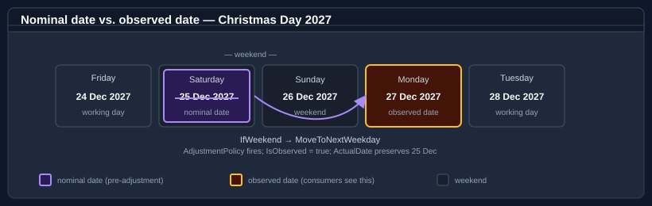

Bodu.Globalization.Calendar — Core concepts
This page is the vocabulary the rest of the documentation assumes. Read it once before the getting-started samples or the guides, and refer back to it whenever a term feels imprecise.
Part of the Globalization & Calendars topic.
For the high-level shape of the library and the resolution pipeline diagram, start with the introduction.
The pipeline in one line

The pipeline reads left to right. A rule document is authored on the notable-date schema and loaded into an immutable NotableDateResource; each notable-date concept carries one or more NotableDateRule recipes; a rule's strategy computes a nominal date for the requested year; an adjustment policy may shift it to an observed date; same-day collisions are settled by the resource's resolution policy; and consumers query the result via Resolve, working-day arithmetic, and filters.
Every term below corresponds to a stage or an input of that pipeline.
Conceptual vs. implementation view. The load step expands into parse → import resolution → override application → assembly → semantic validation; the query step expands into strategy resolution → adjustment evaluation → collision/duplicate settlement → emission. The resolution pipeline guide walks through each stage with worked examples.
Document, resource, definition, rule
A rule document is authored text (XML or JSON) on the notable-date schema (urn:bodu:globalization:calendar). NotableDateResourceLoader parses it, resolves its imports, applies any overrides, validates it, and returns a resource.
A resource (NotableDateResource) is the immutable, fully validated result of loading a document — a resolution policy, a set of adjustment policies, and a list of notable-date definitions. It is the unit a NotableDateService is built over.
A definition (NotableDateDefinition) is a single notable-date concept — an id, a display name, a default category, and one or more rules.
A rule (NotableDateRule) is one calculation recipe for its definition: an applicability window, exactly one resolution strategy, optional adjustment-policy references, and tags. A concept can hold several rules — for example a different recipe before and after a reform year.
Resolved date
A resolved date (NotableDate) is the year-specific concrete output — one occurrence with an emitted Date, the calculated ActualDate, IsObserved, a rule Identity, DisplayName, TerritoryCode, Category, and adjustment metadata. Resolved dates are produced by NotableDateService.Resolve(...).
A rule produces zero, one, or many resolved dates per query, depending on its strategy, applicability, and the requested window.
Nominal date vs. observed date

The nominal date (NotableDate.ActualDate) is what the resolution strategy computes from the rule before any adjustment runs — e.g. 25 December for Christmas Day.
The observed date (NotableDate.Date) is what the adjustment pipeline emits — e.g. Monday 27 December when Christmas falls on a Saturday and a weekend-rollover policy relocates it.
Most occurrences have Date == ActualDate and IsObserved == false. When an adjustment fires, IsObserved is true and AdjustmentPolicyId / AdjustmentReason record which policy moved it. Whether the service emits the observed day alone, the nominal day alone, or both is governed by the policy's EmissionMode (ObservedOnly, ActualOnly, ActualAndObserved, Suppress — plus the [Obsolete] ObservedAsAdditional, which is normalised to ActualAndObserved); which occurrence controls range-query inclusion is governed by the resource's ObservedDateRangePolicy. See Identity, priority, and observed dates and Observance adjustment rules.
Resolution strategy
Each rule carries exactly one occurrence source: a <Strategy> child element (an IDateCalculationStrategy producing at most one date per year) or a <Recurrence> child element (an IDateRecurrenceStrategy producing a frequency-based series). The most common single-date strategies:
| Strategy element | What it does |
|---|---|
<Fixed> |
A specific month + day every year (e.g. 1 January), optionally in a non-Gregorian calendar. |
<DayOfWeekInMonth> |
The nth or last weekday in a month (e.g. fourth Thursday in November). |
<RelativeWeekdayInMonth> |
A weekday positioned relative to a weekday-in-month anchor (e.g. the Tuesday after the first Monday in November). |
<WeekdayNearDate> |
A weekday on / before / after / nearest a fixed reference date (e.g. the Monday nearest 24 May). |
<OffsetFromRule> |
A signed day-offset from another rule's occurrence (e.g. Easter Sunday − 2 = Good Friday). |
<Algorithm> |
Delegated to a named algorithm key for astronomical or ecclesiastical computations (Easter, equinoxes, Vesak, Diwali, …). |
These six are the most-used of the 13 single-date strategies; the others cover positional dates (<OrdinalDayOfMonth>, <DayOfYear>, <IsoWeekDate>), further rule references (<WeekdayNearRule>, <NthWeekdayFromRule>, <WorkingDayOffsetFromRule>), and working days (<WorkingDayInMonth>), and the four recurrence sources (<DailyInterval>, <Weekly>, <MonthlyDay>, <MonthlyWeekday>) describe repeating series. See the strategy reference for the full catalogue, the NotableDateRule and adjustment-policy reference for the per-element contracts, and Date calculation algorithms for the algorithm keys.
Rule references (offset-from-rule)
An <OffsetFromRule> strategy names another concept's rule via notableDateRef (and optional ruleRef) plus a signed offsetDays. The referenced rule is resolved first and the offset applied — this is how Good Friday and Easter Monday hang off Easter Sunday. References are resolved cycle-safely within the same resource; see Date calculation algorithms.
Adjustment policy
An adjustment policy (AdjustmentPolicy) is a reusable, named post-resolution shift declared once at the top of a document and referenced by rules via policyRef. It pairs a AdjustmentTrigger (when it fires — IfWeekend, IfNonWorkingDay, IfDayOfWeek, …) with an AdjustmentAction (what it does — MoveToNextWorkingDay, AddDays, ReplaceWithRule, Suppress, …), an EmissionMode, and an optional AdjustmentScope (territory, calendar, category, year range).
A rule can reference several policies; they are evaluated in priority order. Custom triggers and actions are supplied through IAdjustmentTriggerHandler / IAdjustmentHandler registries. See Observance adjustment rules.
Collision and duplicate resolution
A collision occurs when two distinct rules resolve to the same date for the same territory — for example, an adjusted holiday landing on another holiday. The resource's ResolutionPolicy decides the outcome: CollisionPolicy (KeepAll, HighestPriorityOnly, CategoryPriority, Custom) combined with PriorityDirection, while DuplicatePolicy reconciles identical occurrences. Under CollisionPolicy.Custom, a supplied INotableDateCollisionResolver settles the day. See Identity, priority, and observed-date resolution.
Territory

A TerritoryCode is an ISO 3166 country code with an optional subdivision — AU, AU-NSW, GB-ENG, US-CA. Territory codes are hierarchical: a country contains all of its subdivisions (Contains), and the struct decomposes into Country, Subdivision, IsSubdivision, and Parent. Queries take a plain string territory; the TerritoryCode → string conversion is implicit (a code feeds the resolution surface directly), while string → TerritoryCode is an explicit cast or TerritoryCode.Parse / TryParse / ParseList.
- A rule authored for
AUapplies to every Australian subdivision. - A query for
AU-NSWreturns rules authored atAUand atAU-NSW. - A rule with no
<Territory>constraint applies to every territory — useful for genuinely global dates like the Gregorian New Year.
See Territories and regional composition.
Category vs. tag
NotableDateCategory is the well-known enum — PublicHoliday, BankHoliday, Observance, Remembrance, Cultural, Religious, Seasonal, Civic, School, Regional, Other, None. Every resolved date has exactly one category. Use it for coarse filtering (e.g. "show me public holidays").
Tags are free-form strings on the rule (<Tags>). They survive into the resolved NotableDate.Tags and are intended for fine-grained, app-specific filtering. Combine NotableDateFilter.WithTag(...) with NotableDateFilter.ForCategory(...) for compound queries.
Imports and common catalogues
A document rarely starts from scratch. <Imports> pull notable-date concepts from the bundled common catalogues — global-core, christian-western, global-islamic, global-hindu, and friends — resolved by name through CommonNotableDateResources. An <Import> can take every concept or cherry-pick with <Use> directives that rename, re-scope to a territory, override the category, or attach adjustment policies. Local concepts win over imported concepts of the same id. The Bodu.Globalization.Calendar.<Region> data packs are built exactly this way. See Authoring notable date rules.
Overrides and runtime change
Overrides are ID-targeted edits applied at load time, authored in a document's <Overrides> element: <AddRule> adds a rule to a concept, <PatchRule> replaces parts of an existing rule, <RemoveRule> deletes one. They let a regional document tweak imported concepts without forking them.
Because a resource is immutable, runtime change is modelled by loading a new resource and swapping it in: a MutableNotableDateResourceProvider holds the current resource and Reload(...) replaces it, while a ReloadableNotableDateService reads the provider per query and rebuilds atomically. Code-first contribution of finished occurrences (bypassing the rule pipeline) is the role of INotableDateProvider.
Algorithm vs. fixed rule
When a date cannot be expressed as a calendar formula (Easter Sunday, Vesak, Diwali, Qingming), it is computed by a named algorithm referenced from the rule:
<Rule id="default">
<Strategy><Algorithm key="western-easter" /></Strategy>
</Rule>
Built-in keys (western-easter, orthodox-easter, qingming, vesak, losar, matariki, the Hindu-festival keys, …) are backed by bundled calculators; unknown keys resolve against a custom NotableDateAlgorithmRegistry. See Date calculation algorithms.
Resolved notable date
A NotableDate is the immutable output of one rule for one occurrence. Its key fields:
| Field | Meaning |
|---|---|
Date |
The emitted occurrence date (observed, after any adjustment). |
ActualDate |
The originally calculated (nominal) date. |
IsObserved |
Whether Date differs from ActualDate because an adjustment applied. |
DisplayName |
The display name (subject to optional localisation). |
Category |
NotableDateCategory value. |
TerritoryCode |
The territory the occurrence applies to. |
Tags |
Free-form classification strings from the rule. |
DurationDays, EndDate |
Multi-day spans (e.g. Hanukkah, Easter weekend). |
IsNonWorkingDay |
Whether working-day arithmetic should skip this date. |
AdjustmentPolicyId, AdjustmentReason |
Which adjustment policy moved the date, and why. |
Identity (NotableDateId, RuleId) |
The originating concept and rule. |
Working day vs. non-working day
A working day is any day that is neither outside the configured working week (a Bodu.Core WeekPattern, default Monday–Friday) nor a resolved notable date with IsNonWorkingDay = true for the queried territory.
Not every notable date is non-working: Mother's Day and most cultural observances are notable but not closures. Working-day arithmetic relies on the occurrence's IsNonWorkingDay flag — authors decide which dates count as closures, and each extension method accepts an optional WeekPattern to override the default working week.
See Working-day arithmetic for the operations (IsWorkingDay, AddWorkingDays, NextWorkingDay, WorkingDaysBetween, SnapToWorkingDay, …).
Where to go next
- Introduction — the high-level shape of the library.
- Getting started — install + runnable minimal samples.
- Bodu.Globalization.Calendar guides — deep-dive walk-throughs for every concept above.
- Globalization & Calendars topic — the runtime, its companion packages, and the regional data packs; the topic concepts page collects the shared vocabulary.